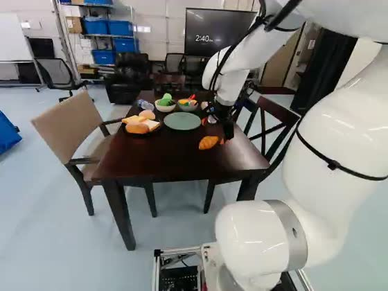
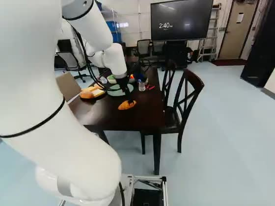
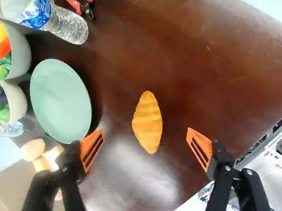
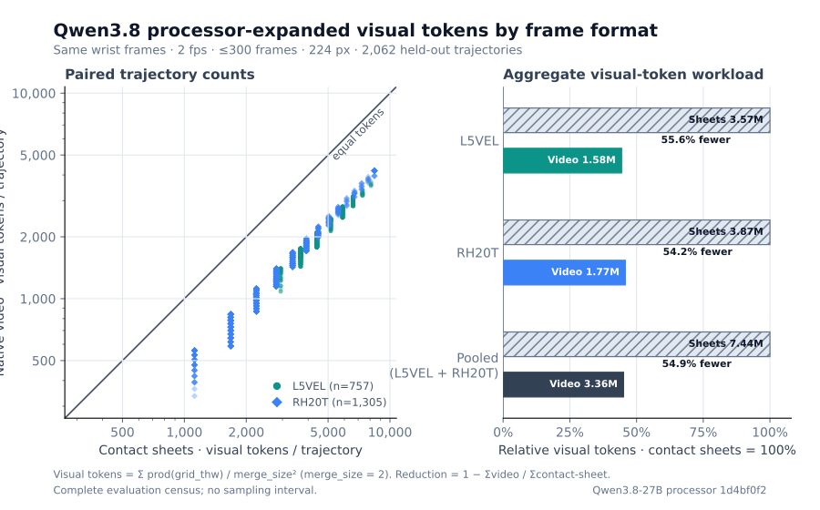

“Clean the table with the green towel” sounds like one action. In the demonstration below, the robot picks up the towel, moves it toward the mess, wipes, repositions, wipes again, and puts it down. The whole episode takes about 52 seconds.
If you want to study the grasp or train a policy on the wiping step, the instruction for the whole episode leaves you with work to do. You need to find that action in the recording and decide where it begins and ends. Timestamped subtask annotations give you a starting point.
We’re releasing sBot-Datasets: 1,499 teleoperated robot
demonstrations across ten tasks, with three camera views, robot states and
actions, and 6,882 subtask spans. Alongside the data, we’re sharing
lerobot-align,
our extension of LeRobot’s annotation pipeline, to help put the steps
in your own recordings on a timeline.
base4-clean-table. The captions follow the
released subtask timeline.
Source and annotation details.
Here is the published subtask timeline for that episode. Notice that moving the towel and wiping both appear twice:
- 0.00 s — pick up the green towel from the table
- 3.94 s — move the green towel towards the mess
- 9.00 s — clean the table thoroughly
- 30.08 s — move the green towel towards the mess
- 36.02 s — clean the table thoroughly
- 43.60 s — place the green towel on the table
- 46.70 s — go home
Those repeated steps are easy to lose in a summary of the video. Keeping them separate lets you find both wiping passes, look at the repositioning between them, and pair each part of the demonstration with its instruction.
What you can do with the data
The collection covers everyday manipulation in our working laboratory: picking up a cup or bottle, moving a croissant onto a plate, retrieving a drink from a fridge, and opening a door and driving through it. Some episodes are short grasps; others combine several steps of navigation and manipulation. All were recorded on the same platform, a six-axis arm with a parallel gripper on a mobile base.
Together, the recordings span 17.2 hours. We publish them in LeRobot v3 format under Apache-2.0, with public, ungated downloads. The dataset table lists the tasks, episode counts and download sizes.
Look closely at an action
Start with a subtask to find the part of an episode you care about, then inspect it from the two scene cameras and the wrist camera. In the croissant example below, the scene views show the arm’s approach across the table; the wrist view makes the target and destination plate easier to see. That gives you a way to check what an annotation refers to before using it.
-

Left scene cameraScene and approach context
-

Right scene cameraOpposite approach angle
-

Wrist cameraTarget and contact detail
base4-plate-croissant, episode 47 at 15.8 s. The scene
cameras show the robot’s position and approach; the wrist view makes the
croissant and destination plate easier to see.
Connect instructions to robot actions
Each episode includes video, joint-space and end-effector states and actions, and language annotations. You can use the timed steps to prepare training samples with a subtask instruction, or evaluate a policy on one part of a longer task. The base and arm share an action vector, so episodes involving both movement and manipulation retain those actions together.
Study how demonstrations break into steps
The collection also gives you examples for exploring temporal segmentation: how long actions last, where labels repeat, and how timing varies between demonstrations of the same task. You can inspect the state, action and language data without downloading the videos. For the croissant dataset, that is about 34 MB instead of 2.5 GB; the download and parsing example prints one episode’s subtask start times.
The annotations need context when you use them. Of the 1,499 episodes, 895 contain imported subtask spans, 602 contain model-generated spans, and two have empty tracks. The import records do not establish who wrote or reviewed the original labels. We have not independently measured annotation agreement or downstream training gains for this release. Use the annotation provenance and practical data notes to choose and check the data for your experiment.
Put your own recordings on a subtask timeline
The same question comes up when preparing a new collection: how do you get
from a recording to a sequence of timed instructions? LeRobot’s
steerable
annotation pipeline already uses a vision-language model to describe an
episode and divide it into subtasks. We built on that work in
lerobot-align, adding fixed-label alignment, native-video input
and boundary calibration.
Where you start depends on what you already have:
- A recording without subtask labels. Generate a first draft of the steps and their times. You can then pass the generated labels through a separate alignment pass before reviewing the result.
- The steps, but no timestamps. Supply the ordered labels and ask the model to locate them in the video. For the cleaning episode, that list would include both wiping passes. This lets you keep your chosen wording while drafting when each step happens.
- Labels and times already recorded. Import the existing spans into LeRobot’s language fields. Importing subtasks avoids a model call for subtask generation; the writer snaps starts to frames and joins adjacent spans to cover the episode.
For a new annotation, native-video mode sends sampled frames as a clip. The model can use the clip’s timeline instead of reading timestamps drawn on a grid of images. If you have reference-annotated examples of a repeated task, calibration can use their timing patterns to adjust later predictions. Our study reserved ten examples per task; calibration falls back to the raw prediction when it cannot fit the relevant pattern.
Review the draft against the recording before using it as a reference. In the cleaning example, check that the two wiping passes are still separate and that the transition into each pass matches the video. Calibration can adjust a timestamp, but it cannot recover a step the model left out.
What we learned from testing the timing
We tested a focused question: when the correct steps are supplied, how well can the tool place them in time? Our study used Qwen3.8-27B on held-out recordings from four L5VEL task groups and 39 RH20T task groups in RoboInter-Data. It did not test label discovery, the generated annotations in this release, or policy training.
Native video placed the supplied steps more accurately than contact sheets at the same 300-frame budget in these runs. Calibration also raised the average timing scores on both sets, with wide uncertainty across the four L5VEL task groups. The RH20T calibration results are exploratory because we revised that protocol after an initial run. We did not establish an accuracy benefit from adding a second camera view.
A useful check was to predict timing from the ten examples alone, without looking at the video. Those simple timing templates had temporal-overlap scores at least as high as the best model configuration. That limits what we can conclude about the model’s added value: for a repetitive task with known steps, compare it with a timing template as well as reviewing its output. The full results include the charts, uncertainty estimates and study limitations.
Native video also used fewer visual tokens
In a separate count using the Qwen3.8-27B processor, native video used 54.9% fewer visual tokens across the same 2,062 held-out recordings than contact sheets built from matching frames. This result uses two frames per second, a 300-frame cap and frames resized to 224 pixels wide. It suggests a smaller visual input workload under those settings; it does not measure billing, latency or total token savings. The token comparison explains the count and links to the public measurements.

| Population | Trajectories | Contact-sheet visual tokens | Native-video visual tokens | Video relative to sheets | Reduction |
|---|---|---|---|---|---|
| L5VEL | 757 | 3,568,425 | 1,584,275 | 44.4% | 55.6% |
| RH20T | 1,305 | 3,869,040 | 1,771,784 | 45.8% | 54.2% |
| Pooled (L5VEL + RH20T) | 2,062 | 7,437,465 | 3,356,059 | 45.1% | 54.9% |
Start with one episode
A small first experiment is to follow one task from its instruction to the video and then to the robot actions:
- Choose a task. Start with table cleaning to explore repeated steps, or moving a croissant onto a plate for a shorter sequence.
- Read its timeline. Use the data-only download and parsing recipe to list an episode’s subtask start times. Add the videos when you are ready to inspect the actions at those times.
- Try the workflow on your data. Follow the installation guide, then choose generation, fixed-label alignment or import. For model annotation, work on a copy of a LeRobot v3 dataset and connect a compatible vision-language model endpoint; native-video mode needs a video-capable endpoint. The pipeline guide has the commands and input formats.
If you use the data or try the tool on a different task, we’d like to hear which steps were useful and where the annotations needed correction. Those examples can help us decide what to add and improve next.
Working with robot data?
Tell us what you’re building with the data, or share an episode that the annotation tool found difficult.
support@l5vel.com